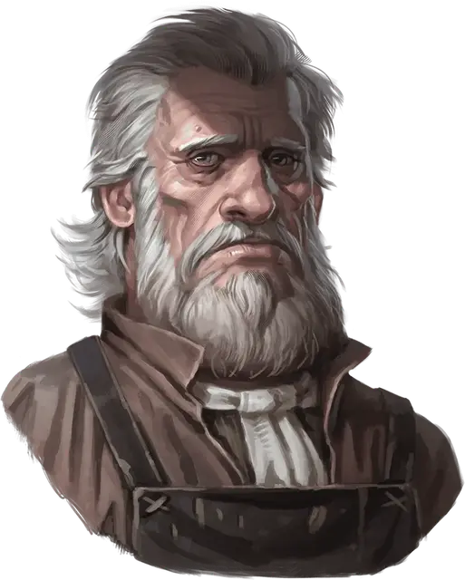

Хенрик ван дер Вурт
Henrik Van Der Voort
Средний Гуманоид (Человек), законно-злой, именной НИП

Класс Доспеха 10
Хиты 4 (1к8)
Скорость 30 футов
| мод | спас | ||
|---|---|---|---|
| СИЛ | 10 | +0 | +0 |
| ЛОВ | 10 | +0 | +0 |
| ТЕЛ | 10 | +0 | +0 |
| мод | спас | ||
|---|---|---|---|
| ИНТ | 10 | +0 | +0 |
| МДР | 10 | +0 | +0 |
| ХАР | 10 | +0 | +0 |
Чувства пассивное Восприятие 10
Языки Общий
Опасность 0
Бонус мастерства +2
Действия
Дубина. Рукопашная атака оружием: +2 к попаданию, досягаемость 5 футов, одна цель. Попадание: Дробящий урон 2 (1к4).
Описание
Хенрик ван дер Вурт мужчина – посредственный плотник и нервный, одинокий человек.
Он наживается на смертях других людей и никто не желает общаться с ним из-за его пугающего ремесла.
Однажды ночью, несколько месяцев назад, Страд нанёс визит Хенрику под личиной хорошо одетого, представительного благородного господина по имени Василий фон Хольц [Vasili von Holtz] и пообещал гробовщику «хороший заработок» за его помощь. С тех пор, мастерская Хенрика стала логовом стаи порождений вампира [vampire spawn] – бывших искателей приключений, обращённых Страдом. Эти вампиры с самого начала «залегли на дно».